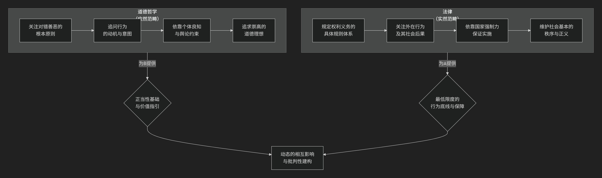

道德
道德哲学分支。
一、核心定义
道德哲学，也称为 伦理学，是哲学的一个核心分支。它系统地研究、批判和分析关于 对与错、善与恶、价值、责任、正义和美好生活 等根本性问题的观念。
简单来说，它不满足于简单地知道“撒谎是错误的”，而是要追问：
为什么 撒谎是错误的？
判断对错的 标准是什么 ？
“错误”这个 词到底是什么意思 ？
我们 如何知道 一个行为是错误的？
二、道德哲学的主要分支
为了回答这些不同层面的问题，道德哲学通常分为三个主要领域，我们可以用一个生动的比喻来理解它们：
想象一下，道德哲学就像医学。
元伦理学 是研究“医学本身”的学科：什么是健康？什么是疾病？这些概念是客观存在的吗？
规范伦理学 是“临床医学”：它提供具体的诊断标准和治疗方案（即道德原则），告诉我们如何判断一个行为是“健康”（道德）还是“疾病”（不道德），以及如何变得“健康”。
应用伦理学 是“专科门诊”：它将医学理论和原则应用到具体的病例（即现实道德困境）中，如心脏病科、神经科等。
下面我们来详细看看这三个分支：
（一）元伦理学： “道德的物理学”
元伦理学是道德哲学的基础科学。它不直接指导行为，而是退后一步，分析道德话语和道德事实本身的 性质。
它研究的问题包括：
道德语言的意义：当我们说“杀人是错误的”，我们是在陈述一个客观事实（像说“雪是白的”），还是在表达主观情感（像说“菠菜真难吃”）？
道德真理是否存在：是否存在客观的、不依赖于人类意见的道德真理？还是说道德只是相对的，因文化或个人而异？
道德与动机：认为“应该做某事”是否会必然产生去做这件事的动机？
主要理论：道德实在论、道德反实在论、情感主义、相对主义等。
（二） 规范伦理学： “道德的指南针”
这是大多数人最熟悉的道德哲学部分。它旨在 建立一套普遍的道德标准或原则体系，用以指导我们的行为，判断对错。
它回答的核心问题是：“我们应该如何生活？”或“什么行为是道德的？”
三大主流理论：
义务论
核心思想：行为对错取决于行为本身是否符合某种 义务或道德规则，而非行为后果。这些规则是普遍、绝对的。
关键概念： 义务、规则、权利、可普遍化。
著名代表：
后果主义
核心思想：行为对错完全取决于其 产生的后果。道德上正确的行为是能在所有可选方案中产生 最好结果 的行为。
关键概念：效用、福利、最大化、结果。
著名代表：
功利主义 （后果主义最主要分支）：主张追求“最大多数人的最大幸福”。
杰里米·边沁 ：经典功利主义，快乐主义，量化计算。
约翰·斯图亚特·密尔 ：区分高级快乐和低级快乐。
彼得·辛格 ：偏好功利主义，将道德关怀扩展到动物。
德性伦理学
核心思想：道德的核心不是“我应当做什么？”，而是“我应当成为什么样的人？” 关注行为者的 品格和道德品质 （即德性）。正确的行为是一个有德性的人在该情境下会做出的行为。
关键概念： 德性/美德、品格、幸福、实践智慧。
著名代表：
亚里士多德 ：德性是实现人生“繁荣”或“幸福”的卓越品格特质，在于找到“中庸之道”。
阿拉斯代尔·麦金泰尔 ：现代德性伦理学的复兴者，强调德性在传统和社群背景下的实践。
（三）应用伦理学：“道德的手术刀”
应用伦理学是将元伦理学和规范伦理学的理论， 应用于具体的、现实的道德难题 上。
它研究的问题包括：
生命伦理学：堕胎、安乐死、基因编辑是否道德？
环境伦理学：我们对动物和自然环境有何责任？
商业伦理学：企业的社会责任是什么？什么是公平贸易？
社会正义：如何构建一个公平的社会？平等意味着什么？
核心分支和流派对比一览表
流派 |
核心问题 |
判断标准 |
关键词 |
代表性思想家 |
|---|---|---|---|---|
义务论 |
我应当遵循什么规则？ |
行为本身的正当性（义务） |
义务、权利、普遍法则 |
|
后果主义 |
如何实现最好的结果？ |
行为的后果（效用） |
效用、福利、最大化 |
|
德性伦理学 |
我应该成为什么样的人？ |
行为者的品格（德性） |
美德、品格、幸福 |
|
元伦理学 |
“对错”意味着什么？ |
道德语言和事实的本质 |
客观性、相对性、情感 |
总结：
总而言之，道德哲学的主要流派提供了一个丰富的思想工具箱，帮助我们以不同的视角审视道德问题：
义务论 要求我们 恪守原则。
后果主义 要求我们 权衡结果。
德性伦理学 要求我们 修养品格。
元伦理学 则提醒我们 反思道德概念本身的基础。
这些流派并非总是互斥，现代道德哲学的发展往往致力于调和它们之间的张力，以应对日益复杂的伦理挑战。
三、 道德哲学与法律的关系
道德哲学（伦理学）与法律的关系是法哲学的核心议题，两者既紧密交织，又存在关键区别。它们共同塑造了社会规范，但从不同角度发挥作用。
以下是一张概括两者核心关系的示意图：

上图清晰地展示了道德哲学与法律之间 对立统一、相辅相成 的复杂关系。我们可以从“对立”和“统一”两个维度来深入理解。
对立与分工：为何两者不可或缺？
图中的左右两部分首先体现的是它们的区别与分工，这解释了为什么一个社会既需要道德，也需要法律。
范畴不同：道德属于“应然”范畴，关注世界“应该”怎样；而法律属于“实然”范畴，规定社会“实际”的运行规则。
关注点不同：道德追问行为的动机是否善良（“好心办坏事”可能道德上可谅），而法律主要关注行为的外在后果和是否符合规则（“好心办坏事”也可能需承担法律责任）。
约束力不同：道德依靠 内在约束 （良心谴责）和 社会软约束 （舆论压力），而法律依靠 国家强制力 （警察、法庭、监狱）这一外在的、强大的硬约束。
标准不同：道德鼓励人做“好人”，追求崇高；法律要求人不做“坏人”，设定行为底线。法律是“最低限度的道德”。
统一与互动：如何相互影响？
图中的中间部分则体现了它们的统一与互动，展示了二者如何共同维系一个健康的社会。
道德是法律的“指南针”与“基石”
提供价值基础：法律的正当性（为什么我们要服从法律？）最终源于道德。例如，“法律面前人人平等”这一法律原则，其根基是道德哲学中的“人格平等”和“正义”观念。
引导法律演进：社会道德的变迁往往会推动法律改革。例如，随着动物保护意识的提升（道德观念变化），许多国家出台了更严格的动物福利法。
法律是道德的“脚手架”与“底线”
将道德制度化：法律将社会最基本的、最共识性的道德准则（如不得杀人、不得偷窃）明确为规则，并用强制力保障其实施，为道德秩序提供了稳定性。
维护道德环境：通过惩罚严重的不道德行为（如欺诈、暴力），法律维护了一个有序的社会环境，使得人们能够更安全地践行道德生活。
当道德与法律冲突时：经典的“公民不服从”难题
两者的关系并非总是和谐的，最深刻的哲学问题正源于此冲突。当一个法律被普遍认为是 不公正的（即严重违背道德） 时，该怎么办？
自然法学派 （如 富勒 ）倾向于认为：“恶法非法”。严重不道德的法律丧失了作为法律的资格，公民有权甚至有权利用不服从。
法律实证主义 （如 哈特 ）则主张：“恶法亦法”。应区分“法律是什么”和“法律应该是什么”。即使法律不道德，它依然是法律，但我们可以通过道德批判去修改它。
历史上的例子（如种族隔离法、纳粹法律）表明，当法律严重背离基本道德时，公民基于良知的 非暴力反抗（公民不服从） （如 亨利·大卫·梭罗 、 马丁·路德·金 ）往往是推动法律向更公正方向变革的重要力量。
总之，道德哲学与法律的关系可以概括为：
道德是法律的精神内核，为其提供 正当性来源和价值指引。
法律是道德的刚性外壳，为其提供 底线保障和制度支撑。
二者是一种 动态的、批判性的共生关系：道德批判推动法律进步，法律框定道德实践的边界。一个理想的社会，其法律应当反映并保障基本的道德价值，同时其道德观念也应不断审视和推动法律的完善。
四、为什么道德哲学重要？
道德哲学的重要性不在于提供一本有标准答案的“人生指南”，而在于：
培养批判性思维：它迫使我们审视那些被视为理所当然的道德观念，检查其逻辑和基础。
做出更合理的决策：在面对复杂道德困境时（如电车难题、隐私与安全的冲突），它提供清晰的思考框架，帮助我们做出更明智、更一致的选择。
理解社会分歧：许多社会争论（如关于堕胎、死刑的争论）本质上是不同道德框架之间的冲突。学习道德哲学有助于理解对立方的深层逻辑，从而进行更有建设性的对话。
过上有反思的生活：它鼓励我们过一种经过审视的生活，思考生命的价值和意义，而不是简单地随波逐流。
总而言之，道德哲学是人类对“如何共同生活”这一根本问题的理性探索。它试图为我们的是非观念寻找坚实的基石，并为我们应对复杂的道德世界提供思考的工具。